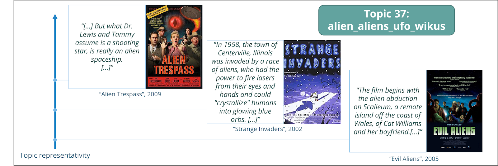
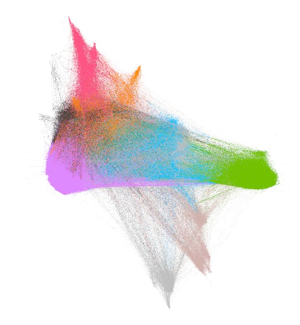

The idea of our project is to represent the dataset of the movies from the CMU Movie Summary Corpus as a graph by connecting the movies looking at the similarities between them. We are operating with a dateset of 41783 movies. Based on this graph, we want to identify clusters and study the most interesting topics.
In our initial investigation, we used word clouds to present the findings of the BERTOPIC model's analysis of the topic distribution of a collection of film plot summaries organized by decade. The results indicated that films encompass a wide range of topics, while also being impacted by the events and cultural context of their time period. For instance, the word clouds for the 1930s decade included words related to France, which aligns with the golden age of French cinema. Similarly, the 1940s and 1950s decades were marked by the aftermath of World War II and the Cold War. While all largely represent the family topic, testifying to the links between the characters described in the plots of films. Overall, this study demonstrates the value of the BERTOPIC model for our analysis of film similarity. The results of the BERTOPIC analysis provide valuable insight into the themes and cultural influences of films, which will be useful in our subsequent analysis of film similarity. By analyzing the topic distribution of a collection of film plot summaries, we can observe how films address a wide range of topics while still being shaped by the events of their respective time period.
¨
The figure plotted above is a visualization of the results obtained from applying the BERTOPIC model to a corpus of film plot summaries. Despite some overlap between the topics, the figure provides valuable and accurate information about the relationships between the plots and their corresponding topics. The presence of a large number of small topics allows for a detailed analysis of a wide range of films, while merging them together would result in the loss of important information about individual, original films. Therefore, we decided not to limit the number of topics found by the hbdscan within the BERTOPIC model. Thanks to the slider and the interactive nature of the graph, you can explore the different topics represented by the three terms with the highest C-TF-IDF scores within the documents belonging to each topic.
To further illustrate the results, we will examine specific topics by identifying the films that are most representative of them.

It is worth noting the precision of the BERTOPIC model in differentiating science fiction films based on their plot, as seen above. If a film belongs to two topics at the same time (dinosaurs and aliens for example), it will have a high probability of belonging to these topics, and this feature will be taken into account in the similarity calculation using the cosine function. This approach allows the BERTOPIC model to provide a detailed and accurate analysis of science fiction films, enabling a deeper understanding of their narrative context and more meaningful comparison.
We have defined the following weights in order to calculate the similarity between films: 'time': 0.1 -This weight represents the importance of the time factor in determining the similarity between films. For example, a film produced in the 50s has more chances to share similarities with closely time-related films than films from the 2000s. Among the other weights, this factor has the least importance. 'content': 0.6 - This weight represents the importance of the film's content (e.g. genre, plot, characters, headlines) in determining the similarity between films. We chose to weaken the characters' similarity weight, knowing that multiple films share common character names (e.g. Jhon is used .... times!). Increasing the weight on the genre is a good idea because the genre, if well described, is a very good indicator of a film's content. Among the other weights, this factor has the most importance as it describes a film the best.
'production': 0.15 - This weight represents the importance of the film's production (e.g. director, actors, runtime) in determining the similarity between films. It is not uncommon for actors to frequently appear in films of a similar genre. In fact, the presence of a shared actor in two films could serve as an indicator of potential similarities in content between the two.
'geography': 0.15 - This weight represents the importance of the film's geography (e.g. language, country) in determining the similarity between films. Films from the same country tend to be more similar, especially if the film's content reflects the country's cultural or societal circumstances or current trends.
We chose these weights based on the importance we want to give to each factor in determining the similarity between films. In particular, we iterated over a list of sequels in order to maximize the score for these films. The higher the weight, the more important the factor is in determining the similarity. For more information on sequels, see Chapter [X].
{% for post in site.posts %} {{ post.title }} {% endfor %}